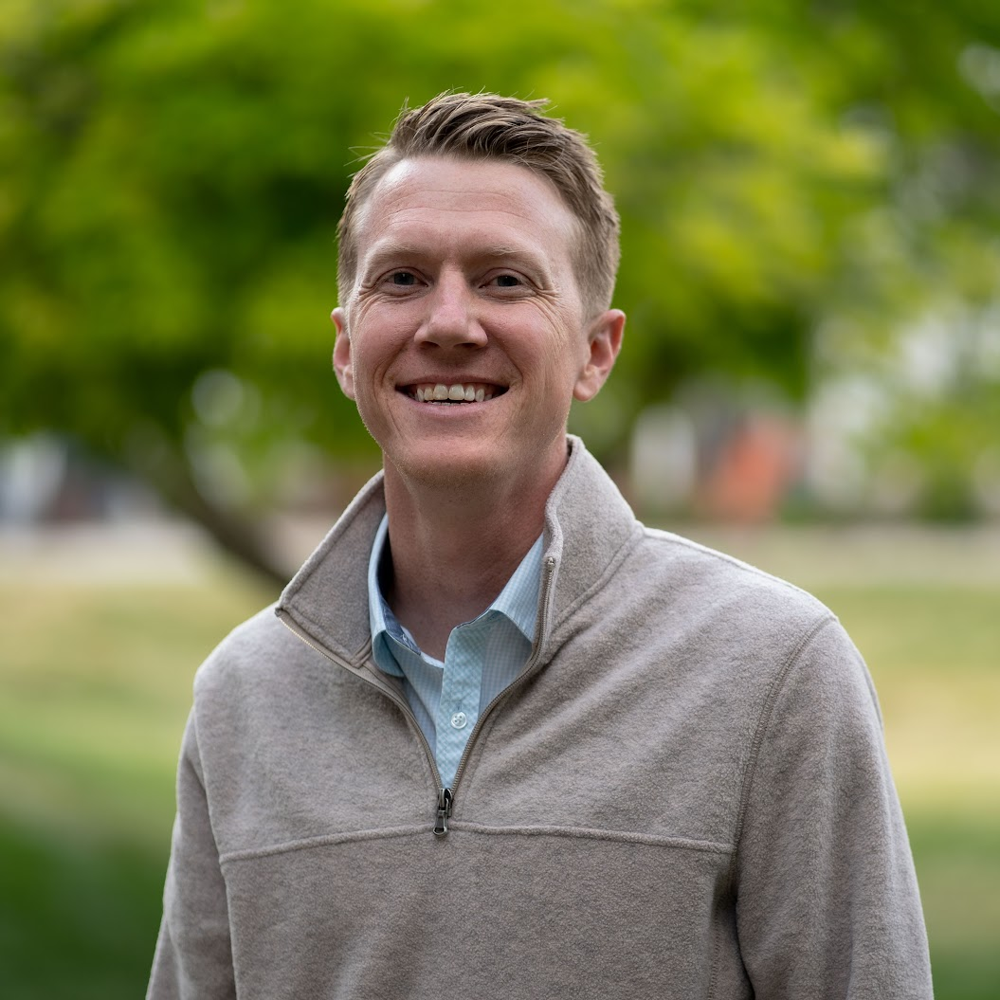

Web Developer

Summary
I have learned in my career that I have a deep desire to be a champion for a product/service and help make people's work lives more effective and fulfilling. As an experienced IT professional and adept leader I have been able to implement this purpose throughout my career from a variety of perspectives. Those perspectives include roles like supervisor, product owner, analyst, developer, and project manager.
Work Experience
USI Insurance Services - Systems Analyst
Nov. 2021 - Current
Remote - Fort Collins, CO
I spent the first 2 years at USI managing projects as part of the Project Management Office. Mainly when USI acquired a company I co-led the projects to move their data from their family of applications to our family of applications. Over the last year I have switched departments, filling a need on the technical side, providing development and support for the ImageRight application.
- Facilitated requirements gathering sessions to ensure stakeholder needs were accurately captured and documented.
- Implemented process improvement initiatives that enhanced operational efficiency and streamlined workflows.
- Executed software testing protocols to validate functionality and ensure high-quality deliverables.
- Provided user support to troubleshoot issues and enhance overall user experience with the software applications.
- Analyzed and massaged large client/policy data sets for consistency and clarity.
- Supported system integration efforts to ensure seamless interoperability between various software applications.
Platte River Power Authority - Application Admin
May 2021 - Nov. 2021
Hybrid - Fort Collins, CO
- Provided enthusiastic dedicated user support to enhance customer satisfaction and resolve inquiries effectively.
- Troubleshot complex issues, employing analytical skills to determine effective solutions and restore functionality.
- Integrated diverse systems by collaborating with cross-functional teams to streamline operations and improve efficiency.
Farm Bureau Insurance - Web Developer
Nov. 2019 - May 2021
In Person - Indianapolis, IN
- Enhanced user experience by conducting usability testing and implementing user input into design iterations.
- Managed version control effectively to streamline collaborative projects and maintain code integrity.
- Collaborated, designed, built, and Implemented code through the SDLC to create backend workflow processes to streamline usability.
- Created processes to improve automations, data capturing and reportability.
- Highly focused with Tech Lead on architecture design and best practices
- Utilized Java, SQL, VB Script, JIRA, Bit Bucket, and other tools on a Kanban agile team.
Farm Bureau Insurance - Team Leader Imaging Services
Dec. 2015 - Nov. 2019
In Person - Indianapolis, IN
I had the honor of serving as supervisor for 8 hard working employees. Our team led company initiatives to digitize hard copy paper documents and implement solutions utilizing digital methods adhering to Insurance standards. Served as Product Owner for the document management application. Provided second tier support.
- Delivered staff training programs that enhanced the team's skills and knowledge in operational procedures.
- Implemented quality control measures to ensure consistent compliance with industry standards.
- Performed regular equipment maintenance to guarantee optimal functionality and prolong lifespan.
- Coordinated team activities to promote effective communication and collaboration among members.
- Managed imaging operations to streamline workflow and improve customer satisfaction.
Education
Indiana University Purdue University - Indianapolis
Bachelors of Science | Organizational Leadership
May 2019
Skills
Enthusiasm, Leadership Mindset, Team Building, Integrity, Character, Resilience, Collaboration, Organizational Minded, Business Processes, Agile Methodologies, Data Analyses, Process Improvement, Project Management, Requirements Gathering, SDLC, SQL, VbScript, Java, JavaScript, Microsoft Excel